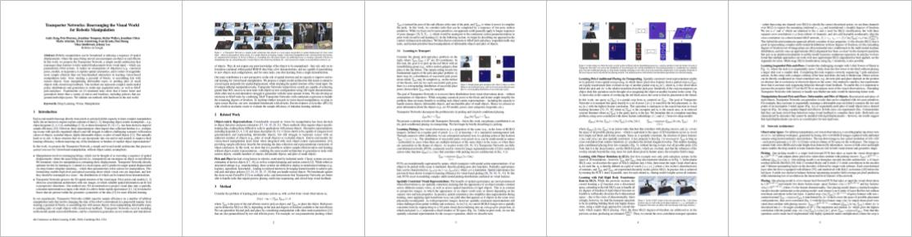

2022 IEEE 5th International Conference on Soft Robotics (RoboSoft)
Abstract. Soft robots have drawn significant attention recently for their ability to achieve rich shapes when interacting with complex environments. However, their elasticity and flexibility compared to rigid robots also pose significant challenges for precise and robust shape control in real-time. Motivated by their potential to operate in highly-constrained environments, as in search-and-rescue operations, this work addresses these challenges of soft-robots by developing a model-based full-shape controller, validated and demonstrated by experiments. A five-actuator planar soft robot was constructed with planar piezoelectric layers bonded to a steel foil substrate, enabling inchworm-like motion. The controller uses a soft-body continuous model for shape planning and control, given target shapes and/or environmental constraints, such as crawling under overhead barriers or "roof" safety lines. An approach to background model calibrations is developed to address deviations of actual robot shape due to material parameter variations and drift. Full experimental shape control and optimal movement under a roof safety line are demonstrated, where the robot maximizes its speed within the overhead constraint. The mean-squared error between the measured and target shapes improves from ~0.05 cm2 without calibration to ~0.01 cm2 with calibration. Simulation-based validation is also performed with various different roof shapes.
Pushing piles with closed-loop feedback
Production pick-and-place w/o 3D models
Multi-step sequential tasks
Pick-and-place with unseen objects
Learning to push piles on real robots
Pick-conditioned placing from 10 examples
Paper
Latest version (Mar 28, 2022): arXiv:2010.14406 [cs.RO].
Published at the 2022 IEEE 5th International Conference on Soft Robotics (RoboSoft)

Code
Code is available on Github. Includes:
• Simulation environments (Ravens with PyBullet).
• Training/testing code (with TensorFlow/Python).
• Pre-trained models and datasets.
Simple toy examples with JAX and Flax in Colab.
Bibtex
title={Transporter Networks: Rearranging the Visual World for Robotic Manipulation},
author={Zeng, Andy and Florence, Pete and Tompson, Jonathan and Welker, Stefan and Chien, Jonathan and Attarian, Maria and Armstrong, Travis and Krasin, Ivan and Duong, Dan and Sindhwani, Vikas and Lee, Johnny},
journal={Conference on Robot Learning (CoRL)},
year={2020}
}
Team

Supplemental Video
Method
Acknowledgements
This work was supported by the Semiconductor Research Corporation (SRC), DARPA, Princeton Program in Plasma Science and Technology, and Princeton University.